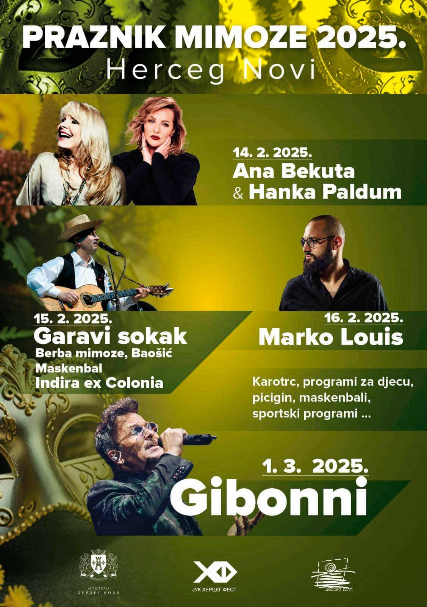

56. PRAZNIK MIMOZE 2025
56. Praznik mimoze biće održan u Herceg Novom od 14. februara do 01. marta 2025. godine.

Herceg Novi se ponovo sprema za najveseliji i najmirisniji festival godine – Praznik Mimoze! Ove godine, jubilarno 56. izdanje festivala donosi bogat program za sve uzraste i ukuse. Od maskenbala i karnevala do spektakularnih koncerata najpoznatijih regionalnih izvođača, Praznik Mimoze obećava nezaboravan provod. Pročitajte detaljan pregled događaja koji vas očekuju u februaru i martu 2025!
14. februar 2025: Svečano otvaranje uz Anu Bekutu i Hanku Paldum
- Vreme: 21:30 – 23:30
- Lokacija: Plato ispred hotela Igalo
Festival počinje povorkom Gradske muzike, mažoretki, trombonjera i maski uz obalu mora. Nakon što ključevi grada budu predati karnevalistima, veče postaje prava muzička poslastica uz koncert regionalnih diva – Ane Bekute i Hanke Paldum. Savršena prilika da započnete ovu feštu u velikom stilu!
15. februar 2025: Maskenbal uz Indiru ex Colonia
- Vreme: 21:00 – 23:00
- Lokacija: Institut „Dr Simo Milošević“
Legendarni maskenbal otkriva pravo lice pod maskama – prilika da svi, makar na jednu noć, budu ono što inače nisu. Veče otvara povorka mažoretki i Gradske muzike, a nastavlja se nastupom energične Indire ex Colonia. Najkreativnije maske biće nagrađene vrednim nagradama!
16. februar 2025: Marko Louis u Parku Boka
- Vreme: 21:00 – 23:00
- Lokacija: Park Boka
Za ljubitelje modernog zvuka, Marko Louis će doneti svoje nezaboravne ritmove u jedinstvenom ambijentu Parka Boka. Očekćuje vas večernji koncert koji spaja tradiciju i savremene note.
22. februar 2025: Hari Mata Hari – Romantična muzička noć
- Vreme: 21:30 – 23:00
- Lokacija: Plato ispred hotela Igalo
Ako ste ljubitelj ljubavnih balada, ovo je koncert koji ne smete propustiti. Hari Mata Hari donosi emocije na scenu i čini ovu februarsku noć savršenom za sve romantične duše.
1. mart 2025: Završnica sa Gibonnijem i suđenje karnevalu
- Vreme: 21:30 – 23:30
- Lokacija: Plato ispred hotela Igalo
Festival se završava spektakularnim suđenjem karnevalu, uz koncert legendarnog Gibonnija. Ovo je prilika da u velikom stilu zaokružite Praznik Mimoze i uživate u vrhunskoj muzici pod zvezdanim nebom.
Tradicionalne manifestacije i dodatni programi
Pored muzičkog programa, posetioci će moći da uživaju u raznim tradicionalnim aktivnostima kao što su:
- Berba mimoze u Baošiću
- Maskenbali
- Sportski programi za decu i odrasle
- Takmičenja poput karotrka i picigina
Ne propustite priliku da posetite Herceg Novi tokom Praznika Mimoze 2025 i postanete deo ovog jedinstvenog festivala koji slavi kulturu, tradiciju i veselje!
Rezervišite vaš smeštaj na vreme!